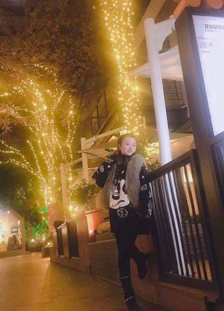
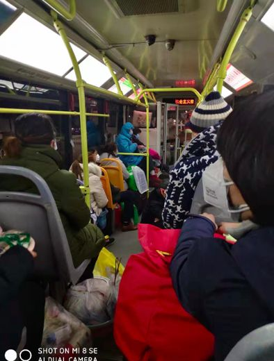
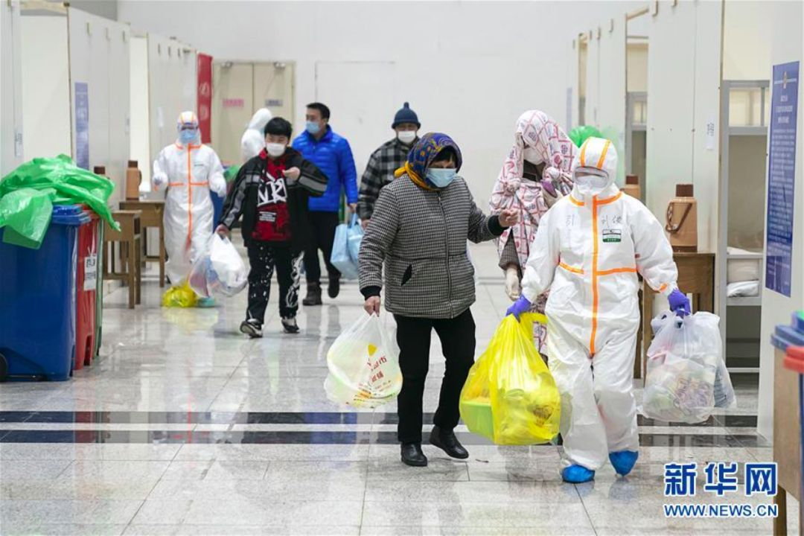
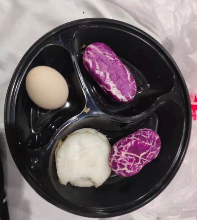
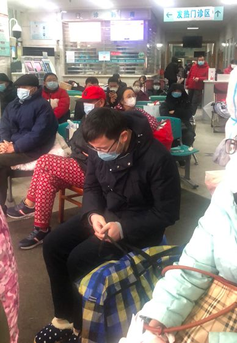
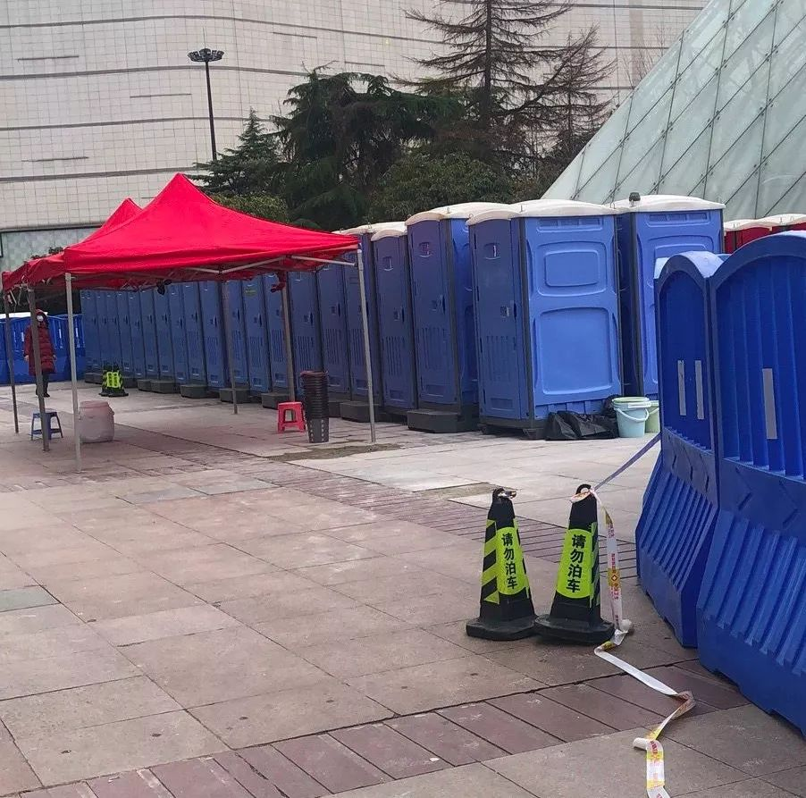
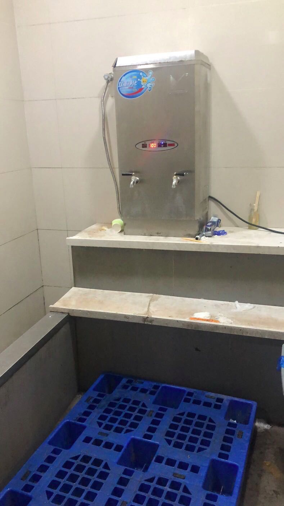

黑龙江聚集性疫情多发 齐齐哈尔市第一医院十余人病房感染
原文链接 备份链接 【财新网】（记者 王和岩）疫情袭来已遍布全国各省份。在距离武汉最北的省份黑龙江，聚集性疫情成为防控重点。截至2月6日24时，各地共报告新型冠状病毒感染的肺炎聚集性疫情48起、发病194人，波及或暴露630人，死亡3 …
我觉得，我们是来这里治病的，这种临时搭建起来的地方，基本条件过得去就可以了。特殊时期，大家需要互相谅解。我也相信，疫情过去后，一切都会好起来的。
口述 | 李 甜
整理 | 应 琛
我今年43岁，在武汉硚口区税务局工作。我原本是一个很阳光的单亲妈妈，准备今年2月2日结婚的。但因为这场无声的战斗，一下子变得一无所有。

李甜说自己在疫情来之前一直是一个乐观开朗的单亲母亲
家里最早是我妈妈在1月24日晚上出现了咳嗽的情况。到了1月25日，就有点加剧了，一直低烧在38.5度左右。
我爸爸在南京上班，年前就回家了。因为提前请了假，1月20日，我也不上班了。从这天后，全家人都在家，没有去过什么人群聚集的地方。我爸是中医、主任医师，我妈是西医，我自己大专的时候也是学中医的。所以我们当时都以为母亲只是普通的感冒发烧，在家自行给她输了液。她的烧确实也退了。
但之后的几天里，我家四个人陆续出现了不舒服的情况，不过都没有发烧。像我就是浑身痛，脖子也痛，我还以为是颈椎病犯了。说真的，四个人三个是学医的，完全没有想过会感染，我们都很注意的。

家人合影
1月30日，我妈身体突然变差，说她难受。我一看情况确实不太妙。我赶紧跑到小区开着的那个门，问保安能不能把离我家近的那个门打开。因为现在每个小区都封门，唯一开着的那个门，我搀着母亲走过去的话要十多分钟。但他们说不行，那也没办法。我又去跟社区报备，说我家里是这样的情况，问是不是他们派车把我妈送去指定医院，但他们让我自己送到指定的前进卫生院核查。
那天，我自己的身体也还是痛，但家里只有我，还好当时还能开车，就把母亲送过去了。对方只能做胸透，建议我要去大医院进一步做CT。离我们家最近的就是协和医院，但我知道那里肯定人满为患，我妈这个情况不可能排队的。我又开着车把我妈送到了江岸区一个比较偏的医院，CT做完，医生说不排除是新冠肺炎。但他们这里不具备条件。
我妈拉着我，说她喘不过气来。我赶紧把她送去了协和。在发热门诊，我是直接跪在了地上，说快来人救救我妈妈，她快不行了。幸好，有个像是护士长的人，马上找了轮椅把母亲送去吸氧，这才缓解了一点。当天我把所有能做的检查都给我妈做了，包括核酸检测。我自己也做了核酸检测。
输液室里面太恐怖了，全是吸氧的人。那天我妈就一直坐在输液室门口，但非常冷。我就去找医生问能不能安排住院。医生说新冠确诊病人都是去协和西院，但那里也没有床位了。这一切我都明白，我不奢求有床位。我就一直求医生哪怕是一个留观的位置也行。最后，医生让我把妈妈送去4楼的留观室。那里是一个两人间，我真的很感激，也很满意了。
但当时我妈的情况已经很差了，有床也不能躺，会影响呼吸，只能一直坐在轮椅上。这期间，我才知道，母亲曾陪舅舅去医院看过一次病，而我舅已经在武汉市中心医院住院，是新冠确诊病人。
这种情况下，安顿完我妈，我立马在医院对面租了一个民宿，回家收拾了一下，把我儿子和爸爸接过去住，一人一间房隔离。当时，我儿子也有点发烧了，而我爸浑身乏力。

李甜的微信头像
1月31日，儿子发烧到39度，我赶紧带着他去医院。我爸那时不愿意去，说他走不动。儿子在医院吊了针，也做了核酸检测。第二天，我硬拖着父亲去医院也做了核酸。
最后，检测结果出来，我妈是双强阳确认，我和爸爸是双阳确认，我儿子单阳确认。这个检测结果也是一波三折，本来是说确诊病人才会收到短信，但我一直没有收到我妈的短信。一开始医生说没有收到就不是，还让我放心。我坚持让医生用电脑帮我查，一看果然是确诊。
我自己一个确诊病人，那几天，就拖着这样一个身体，可以说是身分三处照顾家里人。幸好老天爷最后的怜悯，我一点症状都没有，不然这个家就彻底垮了。也幸好我没有传染给未婚夫，但他也使不上力，不能过来帮我。他家也有瘫痪的母亲需要他照顾。
拿到确诊的报告，我又电话了社区，问他们怎么办，当时他们只说了会上报。2月3日下午，我接到社区的电话，让我们去红会医院等，说是像我们这种确诊的轻症病人会安排去方舱医院。我便开车把他俩送了过去，我又回到协和医院照顾我妈。当晚，我爸是在空床上，而我儿子就在板凳上坐了一晚。
当时，虽然不知道方舱医院是怎么回事，但总算让我有了喘息，至少儿子和爸爸不用太担心，我可以一心一意照顾我妈。她情况真的不太好，不能吃，不能喝，只能靠输液维持。这种病现在也没什么特效药，只能靠自身的免疫力，我已经花了一两万元帮她输了各种蛋白。
2月4日，儿子和父亲被接去了指定的宾馆继续等待。但当天，我妈的病情急转直下，整个脸都肿了，血氧量也从之前靠吸氧可以达到90以上，变成了六十几。医生怎么做都不见好转，看着我妈全身插满了管子，我纠结犹豫了好久，最后和医生说“算了，不想再看着我妈妈痛苦”。他们就由4个人把我妈抬上了床，我妈那时已经小便失禁，轮椅上全湿了。
我给儿子打了个视频电话，让他和外婆见上最后一面。我儿子和我妈的感情很好，当时他喊着：“外婆你振作点，你要好起来。”而我爸始终不愿面对。我儿子告诉我，外公就一直在床上躺着，不愿说话也不理他。我知道，我爸当时是崩溃的。
2月5日凌晨，母亲最终没能熬过去，全身都是肿的。我看着她咽下了最后一口气，瞳孔慢慢放大，眼泪已经不知道留了多少。母亲怪过我，说为什么这些天都见不到我人。我真的没办法，除了几头跑，每次医生开个什么药，因为是全报销的，都要去登记再去指定的地方拿，离得很远。
像这种病人的遗体也是要特殊处理的，医院给了我电话，让我自己联系殡仪馆。然后他们很快就来了，用了几层黄色、白色的袋子把母亲带走了，告诉我15天后去拿骨灰。
处理完母亲的后事，来不及伤心太久，我也去了红会医院等，但因为第一批的时候我不在。2月5日晚上，我儿子和我爸先被送进了位于武汉国际会展中心的江汉方舱医院。他们是第一批，新华社拍的照片里就有他们。

儿子和父亲去医院的路上

图中的小朋友就是李甜15岁的儿子，身旁戴蓝色帽子的老人是她71岁的父亲（图：新华社）
我就在医院的椅子上躺了一晚，听说是第二天一早会安排我们。

她自己在红会医院的椅子上度过了一晚
2月6日，和儿子微信沟通得知，他和我爸是挨着的两张床，那里给他们发了洗漱用品。有供电，也有电热毯。并不是网上传的没电很冷，在这种情况下还瞎传一些负面的东西太可恶了。但我儿子说，厕所是真的非常脏。他说：“妈妈，这种厕所你肯定受不了的。”


他所在的病房一共50人一间，但只有四个医生和两个护士，感觉有点忙不过来。
6日，大约是早上10点才发了早餐，很简单。然后晚上发了药，我儿子也拍给我看了，都是一些中成药，我感觉没什么用。我就让儿子一定要好好吃东西，照顾好外公，也让他吃东西，这样才有力气与疾病斗争。


而我自己在红会医院只有等，现场情况也非常乱。一方面社区不断送人过来，有的根本还没确诊是来检查的，但他们不知道也混在里面；另一方面，完全没有车子送我们去的意思。就看到大厅里人越来越多，大家逐渐失去了耐心。

原本大家都坐着等
我也看到有些人被从方舱送了回来，因为那里只收轻症患者，这些人的血氧量低了，应该是送火神山、雷神山这种地方的。就这样我又在红会医院的椅子上坐了一晚，还好医院是提供盒饭的。
2月7日下午，因为迟迟看不到安排，很多人像我一样在这里已经待了两晚了，体力都快透支了。有人开始“闹”，警察都来了。我也是非常迫切地想要看到父亲和儿子。
最终总算安排了车子，把我们这批人送去了方舱医院。到了之后，有医生过来询问了我们的情况，也发了晚餐，有荤有素，也是热的。但我到得比较晚，就没有给我们发药。我儿子说今天发了一些号称是对这个病很有效的中药。

这里是可以走动的，男女病区也可以偶尔串门。但因为我情况比较特殊，我跟他们说了，儿子和父亲都住在这里，他们就让我随时可以过去照顾他们。总算见到他们了，我也放心了。他俩总体精神都不错。但我爸好像是因为吃了中药，胃不是很舒服。
李甜拍摄的视频，认为方舱医院环境尚可
我觉得整体条件还是可以的，就是除了住的地方干净之外，厕所、洗漱的地方都真的是太脏了。不过，今天（2月8日）上午，经过很多患者的抗议，工作人员已经把厕所打扫了一下，现在还是满干净的。

移动厕所

水房还是有些脏
我早上起来有些头晕，胃也不知道是不是因为吃了药的关系反应有些大，过一会儿准备再去问问医生。不过昨晚，医生查房的时候告诉我，我的病情是在好转的，相信很快可以出院了。我父亲和儿子今天的状态也都不错，父亲还提出要喝皮蛋瘦肉粥，我给他点了个外卖。

今天13时左右，医院提供的午餐，还发了水果

一家人在方舱医院的合影
我觉得，我们是来这里治病的，这种临时搭建起来的地方，基本生活条件能够满足就可以了。特殊时期，大家需要互相谅解。这些天，我打过市长热线，也求助过社区，尽管都有难处，但最后都给了我很多帮助，包括我所在的单位。期间，大家因为各种各样的原因，有情绪在所难免，但现在回过头去想，一定还是要相信政府。相信一切很快可以好起来。
本文图片和视频除特殊说明外均由采访对象提供
征集令
“战疫”成败，匹夫有责。
《新民周刊》现面向全国征集新冠肺炎采访对象和真实故事：
如果你是参与抗击新冠肺炎疫情的医护人员或其家属，我们希望聆听你的“战疫”故事，也希望传达你的诉求。
如果你是确诊、疑似患者本人或家属，我们希望了解你和家人如何“抗疫”的过程，让外界了解你的真实经历。
如果你是疫情严重地区的普通市民，我们希望展现你的乐观，并倾听你所需的帮助。
如果你是公共服务人员或各类捐助者，我们希望看到你的“最美逆行”，记录下你的无私。
……
抗击新冠肺炎疫情，我们诚征对疫情了解的社会各界人士，提供相关线索，说出你的故事，让我们用新闻留存这一切。
《新民周刊》新冠肺炎线索征集值班编辑联系方式（添加时请简要自我介绍）：
周一：应 琛 微信号：paulineying0127
周二：金 姬 微信号：gepetta
周三：黄 祺 微信号：shenwen-2020
周四：周 洁 微信号：asyouasyou
周五：孔冰欣 微信号：kbx875055141
周六：吴 雪 微信号：shyshine1105
周日：姜浩峰 微信号：jianggeladandong
新闻是历史的底稿，你们是历史的见证者。期待你的故事、你的线索！

▼
大家还都在看这些
▼
转载请在评论区留言，获得授权！
转载时，须注明作者、出处和微信号


原文链接 备份链接 【财新网】（记者 王和岩）疫情袭来已遍布全国各省份。在距离武汉最北的省份黑龙江，聚集性疫情成为防控重点。截至2月6日24时，各地共报告新型冠状病毒感染的肺炎聚集性疫情48起、发病194人，波及或暴露630人，死亡3 …
原文链接 备份链接 疫情发展 根据丁香医生实时数据，截至 2020 年 2 月 6 日 18 时，全国累计确诊病例 28129 例，疑似病例 24702 例，新增确诊病例 3766 例，新增疑似病例 5328 例。其中，重症病例 3859 …
原文链接 备份链接 【财新网】（记者 张帆）2月3日，首都医科大学附属复兴医院心内科重症监护室出现聚集性病例，确诊9例，其中医护人员5例。北京第一时间披露了相关情况。西城区副区长缪剑虹介绍称，目前相关人员已经转到定点医院治疗，以轻症为 …
原文链接 备份链接 杨晨还在等通知。他在等待“十号令”带给他以及他的家庭命运的转机，他是一位“武汉病人”的家属。 让他有所期许的“十号令”，是2月2日发出的。按照“十号令”的要求，自通告发布之日起，对全市经发热门诊诊断有肺炎症状的发热病人 …
原文链接 备份链接 2月1日，西藏自治区第三人民医院医生土旦朗杰观看病人胸片。目前，西藏唯一一例确诊的新型冠状病毒感染的肺炎患者在此住院治疗。觉果/摄 新华社CNML图片 作者 杨海 编辑 从玉华 李亮是武汉某三甲医院的病房主任，从1月 …